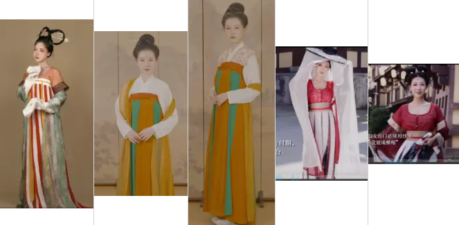
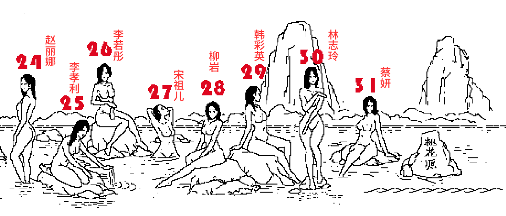

-
1.商朝服饰特征？ 领袖-腰带-蔽膝土裙-发型
1.商朝服饰特征？
交宽领-宽边大袖-直裾。
宽腰带-直扇蔽膝、玉簪插 后仰筒发
-
2.西周服饰特征？
2.西周服饰特征？ 领袖-腰带-蔽膝土裙-发型
交宽领-宽边大袖-直裾、 宽护腰-大腰带-中系而垂-直蔽膝-拖土裙，
左右分而后高髻
鞋尖如扳手 -
3.秦朝服饰特征？
3.秦朝服饰特征？
交直领-宽边大袖-直裾长衣、腰带-围裙-内双系而垂-直蔽膝-拖土裙，
分梳（八）平髻扎花
红领镶黑边
-
3.西汉服饰特征？
3.西汉服饰特征？ 领袖-腰带-蔽膝土裙-发型
交宽细领-宽边大袖-曲裾长衣、窄腰带-中系而垂-直蔽膝-拖土裙，
分梳（人）后扎

-
3.东汉服饰特征？
3.东汉服饰特征？ 领袖-腰带-蔽膝土裙-发型
交宽细领-宽边大袖-曲裾长衣、护腰宽带-中系而垂-直蔽膝-拖土裙，
分梳（人）后扎
-
3.魏晋南北朝服饰特征？
3.魏晋南北朝服饰特征？领袖-腰带-蔽膝土裙-发型
交常领-垂胡大袖-衫+内搭高圆、低平领、腰裙细绳中系/飘逸尖裙
分梳（圆）龙须-高髻
鞋尖如天坛

-
3.隋朝服饰特征？
3.隋朝服饰特征？领袖-腰带-蔽膝土裙-发型
交领-窄袖-短襦+齐胸长裙、裙边细绳双系飘逸
后梳高髻插花 -
3.唐朝服饰总体特征？
3.唐初服饰特征？领袖-腰带-蔽膝土裙-发型
1、承隋，齐胸坦交领开领交领 （1修长+00）
2、武周半袖宽衣坦露盛行（元宝）
3、盛唐回归，齐腰襦裥宽，（X）
4、中唐披肩中系发如钟
5 晚唐大袖掩胸大包头系中腰
发型：后梳高髻插花 -
3.唐初服饰特征？
3.唐初服饰特征？领袖-腰带-蔽膝土裙-发型
交对坦尖领-窄袖-短襦+齐胸间色长裙、裙边细绳中系双系飘逸、披帛在肩在臂、或半臂、无袖外衣
后梳高髻插花

-
3.桃花源记回忆？
3.桃花源回忆
1、石前 韵涵
2、岩上 丽颖
3、石下 左垂峰
4、水上 挠后立：
5、平坡超越
6、小石 耳展立
7、沿边 搁左右中山
8、人后 右肩立
9、小岩 左脸斜川
10、岩边 摸左膝右人 医师摸左膝右成人
11、坐水 左夹臂
12、前岩 正后合垂 姨儿正后 合垂
13、岩下 左后撑山 艺珊朝左 后撑山
14、后岩 右臂右个 医嗣 右臂有个
15、向右脚板立 义乌友 嚼板栗
16、向左垂叉 右斜水 艺柳向左垂插右写水
17、远上 向右身如人 仪器向右 身如人
18、近石 向右抱头曲从 尾巴向右抱头屈从
19、中石 向左身如止 溢酒向左身如止
20、前水 向左曲臂背立 二世向左屈臂背立
21、水上 右弯泼水 合入 儿椅右弯泼水合入
22、后水 正弯左泼 左膝低 二恶证晩坐破坐低
23、岩上 向左挡水 下身斜 俄山嘬裆水下身斜

24、中水 向左垂臂 前屈腿。鹅四侧走垂臂牵曲腿
25、身后右跪 腿舀水 俄乌油贵退药水
26、石上 左搭前臂 腿合下入 鳄遛坐大钱币 下二入
27、下水 向右抱仰
28、低石 向左抱内腿 外腿直
29、高石 向右后撑 外伸内直
30、水上 正抱臂y直立右抬
31、远石 向左挺胸后撑 左斜屈压
-
3.宋朝服饰总体特征？
3.宋朝服饰特征？领袖-腰带-蔽膝土裙-发型
宋 ：交领 对长对短 褙无褙长 ，
1、发形如垒卵如崇山，
2、发插钗饰
3、北发冠南发巾插花
4、南宋末精简
宋发印象 ：1、分梳而髻如垒卵，2、或披长发前后挂 3、发饰清简高雅 -
3.元朝服饰总体特征？
3.元朝服饰特征？领袖-腰带-蔽膝土裙-发型
元 1、 毛领厚袍
元 1、分梳贴头挂珠饰，2，长辫双挂
-
3.明朝服饰总体特征？
3.元朝服饰特征？领袖-腰带-蔽膝土裙-发型
明衣：
1 交领白领及腰短衫
2 细领及膝长衫
3 立领大袖及膝V领大衫
4 立领宽袖及膝无袖比甲
5 立领广袖长衫
明发：1、 顶梳而髻，或无或扇或矮方 -
3.清朝服饰总体特征？
3.清朝服饰特征？领袖-腰带-蔽膝土裙-发型
宫廷: 1、立领斜襟喇叭袖，2、上有衣长短，3、下有宽裤或宽裙
平民： 1、立领宽袖过膝裙， 2、一直无双如对斜
平民 1、后疏而髻 刘海分发 长辫披发多常见 2、清宫两把架子大
拉翅 -
3.民国服饰总体特征？
3.民国服饰特征？领袖-腰带-蔽膝土裙-发型
1、短直双辫是小女孩，
2、长卷欧卷美少女
3、波浪燕尾正女人，
4、刘海挽髻美妇人